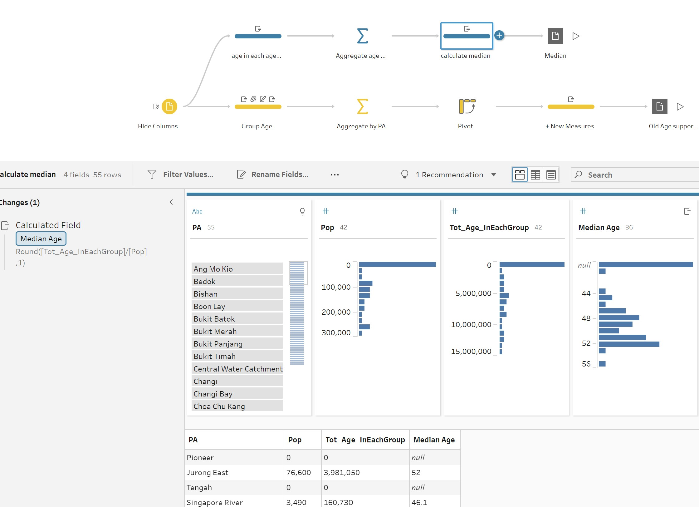

Take Home Exercise 01
1. Overview of Task
Age-sex pyramid is an analytical visualisation commonly used by demographers to reveal the structure of population by gender and age group. In this take-home exercise, you are required to reveal the demographic structure of Singapore at planning area level by using age-sex pyramid method. Instead of plotting a single age-sex pyramid, however, you are required to display nine selected planning areas on a single view by using trellis display (also know as small-multiple plot).
Singapore Residents by Planning Area / Subzone, Age Group, Sex and Type of Dwelling, June 2022 should be used to prepare the analytical visualisation. The data can be downloaded here.
2. Visualisation
The proposed visualisation can be viewed on Tableau Public here.
3. Key Observations
- Median Age
On the top-left corner of each pyramid, the name of the planning area(PA) and median age of the respective PA are shown. For example, Bedok has the highest median age of 52, while Punggol has the lowest median age of 45.7. The population in Punggol is much younger than those in Bedok.

Note that We have arranged that the pyramids for each PA. The order is based on median age. The median age decreases from left to right and from top to bottom.
- Age Structure
In Bedok and in Hougang (top left corner), each consecutive age group moving up the pyramids gets broader from 0 to 69 years old and then gets narrower from 70 years old. This is a typical aging population. The population pyramid of Singapore shown on the right margin also has the same structure. The aging population mainly due to factors such as low fertility rate and high life expectancy.
In Punggol and SengKang (bottom right corner), there are bulges in the age groups of 0 - 10 and 30 to 49. We can conclude that many of the residents living in these PA are young families with children. According to Straits Time, Punggol was dubbed as Singapore’s baby town in 2017.
The pyramids in other PAs have narrow base which represents a low birth rate. The population is mostly clustered around the age groups of 20 to 40 and 50 to 70. While in the younger PA such as Woodland, the peaks are at 20 to 29 and 50 to 59.
While in elderly PA such as Tampines, the peaks are at 30 to 39 and 60 to 69. On average, the population in Woodlands is 2.4 yrs younger than those in Tampines.
Overall, the pyramid in the two oldest PA has a similar shape as Singapore, while the pyramid in the two youngest PA has a very different shape as Singapore.
- Old Age Support Ratio
According to Singapore Department of Statistics, the old age support ratio represents the number of people who are capable of providing economic support (20 to 64) to the number of older people who may be dependent on others support (65 and above). The value of old age support ratio for each PA is as shown on the right margin. Not surprisingly, the value of this ration increases from the elder PA to the younger PA. One elderly people aged 65 and above is supported by 3 younger people in Bedok, and is supported by 7.3 younger people in Punggol.

The order of PA in the table is arranged according to median age in descending order, i.e. from the greatest to the smallest. We noticed that the value of the old support ratio is almost in ascending order, expect the woodlands and Sengkang has equal value.
- Males vs. Females
In all pyramids, there is no symmetry between males and females in older age groups (>70 yrs). The women are living longer than men. There are also slightly more males than females in younger age groups, as the natural sex ratio at birth is around 105 boys per 100 girls. The ratio is not skewed than would occur naturally.
- Location of 9 selected Planning Areas
There are 7 out of 9 most populated PAs in the East and North of Singapore. The youngest PA is located in the north of Singapore and the oldest PA is located in the east of Singapore.

4. Step by Step Preparation
This section details the steps required to produce the dashboard as described in section 2.
4.1 Use Tableau Prep for data preparation
The flow of the data preparation to obtain the Median Age and Old Age Support Ratio for each PA is as shown below.
| No. | Step | Screenshot |
|---|---|---|
| 1 | Load the originl data csv into Tableau Prep by click the plus symbol besides Connections, then choose Text File. |  |
| 2 | Hide unnecessary columns by unclick the specific Field Name. In this task, the SZ(subzone), FA(floor area), Time(2022) are hided. | |
| 3 | Calculate median age for each age group, and the total age for each row = median age * population in each row. | |
| 4 | Aggregate the age and population for each PA. | |
| 5 | Calculate the median age for each PA and output as csv file. |  |
| 6 | Create new age group by grouping original age groups. | |
| 7 | Aggregate population for each PA. | |
| 8 | Convert the long table to wide table. | |
| 9 | Calculate old age support ratio for each PA and output as csv file. |
4.2 Build Dashboard
4.2.1 Draw Map Highlighting the 9 Most Populated PA in Singapore
| No. | Step | Screenshot |
|---|---|---|
| 1 | Load the original population .csv file, subzone by planning area .shp file and the two output files with derived measures (old age support ratio and median age) in each planning region .csv files in Tableau Desktop( for mapping purpose). | |
| 2 | Drag all the files besides the original of population file to join files by matching PA (the name of the planning areas). Note that in .shp file, the name of planning areas are in upper case. We need to edit the matching by Upper(PA) = PA(.shp file). | |
| 3 | Files are joined successfully. | |
| 4 | Drop Geometry to the field. | |
| 5 | Drag Pop to Color, PA to Label. |  |
| 6 | Edit the color. When we choose step 3 and modify the color of least population to light grey, the no. of highlighted region is 9. | |
| 7 | Edit the label on the map. Select always show for Punggol and Bedok, and never show for the rest PA. We can annotate the two highlighted regions to facilitate understanding. |  |
4.2.2 Draw Pyramids of the 9 PAs and Display in Trellis (single diagram)
| No. | Step | Screenshot |
|---|---|---|
| 1 | Manually sort the PA (name of planning areas) based on median age as we would like to control the arrangement of pyramids of PA in trellis. |  |
| 2 | The 9 most populated PA are sorted, while the rest of PA are unchanged. |  |
| 3 | Create a new parameter representing the number of columns in trellis. In this example, the parameter should be sqrt(9) = 3. Note that creating such parameter is to avoid hard code. | |
| 4 | Create a new calculated field named Index of each row. | |
| 5 | Create a new calculated field named Column Index of each row. |  |
| 6 | Create a new calculated field named Row Index of each row. Note that the column index and row index will be used when we need to display the 9 pyramids in trellis (a single diagram containning many small plots). The two index serve the purpose as the coordinate of each small plot, such as (1,1) in the top left corner and (3,3) in the bottom right corner. | |
| 7 | As we would like to display partial data in trellis, we created a new calculated field called Group1 to group the 9 selected PA in one group, | |
| 8 | Then we drop Group1, choose Attribute to filter and select ‘1’ only. |  |
| 9 | Due to space constrain, we create new age groups. In the original dataset, the step between consecutive age groups is 5. We increase it to 10. That is, we combine every 2 groups into 1, such as 0 to 4 and 5 to 9 into 0 to 9. |
|
| 10 | Create new calculated field of population of males and females as shown. | |
| 11 | Drop Row_Index, Male and Female into Columns. Drop Column_Index and AGE into Rows. Drop PA to Detail. Note that we need to modify the Row_Index and Column_Index by selecting computing using PA. |
 |
| 12 | Then we drop the [Sex] to Colour, Rank of PA to Detail in Mark card of All. We can modify the color of sex by using blue to represent Male and Pink to represent Female. |  |
| 13 | Modify the tooltip. | |
| 14 | Rearrange the order of age group on y axis. |  |
| 15 | Add the label for the bar representing age group of 90+ for Males in each PA. First, select all bars and choose Mark Label -> Never Show. Then select the bars representing age group of 90+ and choose Mark Label -> Always Show. |
|
| 16 | Then add names of PA and median age of PA to Labels. |  |
| 17 | Reverse the Male axis to build pyramid. |
|
| 18 | Format of label by click the ‘…’ as shown on the screenshot. Please note that in order for the label to appear on the top left corner, I specifically add a full stop of blue color after many empty spaces in the second line. |
 |
| 19 | Add the title of the worksheet. Remove the unnecessary headers to obtain the final view of the worksheet. |
 |
| 20 | Create a new worksheet to plot the pyramid of Singapore as a reference. |  |
| 21 | Create a table showing the Old Age Support Ratio of each PA. |  |
| 22 | Create a new dashboard and drop the worksheets to specific locations and adjust the width and height of each region. Add Note, data source and update date. |
 |
| 23 | Publish the dashboard. Note that we need to choose to Extract Data, instead of using Live Data. |  |


I appreciate you taking the time to read this article and paying attention to it.